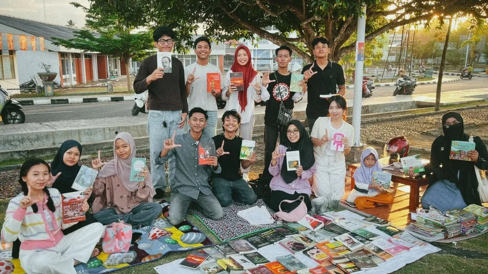

Membawa Jendela Dunia Ke Setiap Sudut Kota
Akses lapak baca gratis, lacak posisi armada secara real-time, pinjam buku secara mandiri, dan dukung gerakan literasi masyarakat dalam satu platform digital terpadu.
Status Operasional Hari Ini
Informasi titik mangkal agar tidak terlewat oleh siswa dan mahasiswa.
Status: Beroperasi
Lokasi: Taman Kota Tasikmalaya
Jam Layanan: 15.00 - 17.30 WIB
Aktivitas Literasi Lapangan
Cuplikan kegiatan membaca bersama di ruang publik.
